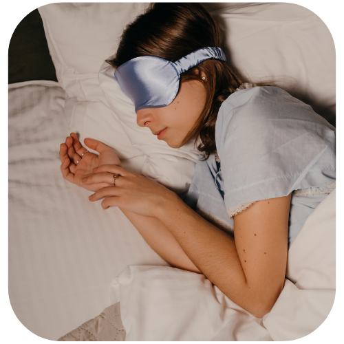

How to sleep better
Struggling to get a good night's sleep? You're not alone. Many people find it difficult to unwind and drift off into slumber. But don't worry, there are simple steps you can take to improve your sleep quality.
Establish a calming bedtime routine to signal to your body that it's time to wind down. This could include activities like reading a book, taking a warm bath, or practicing gentle yoga stretches. Limit screen time before bed. The blue light emitted by screens can interfere with your body's natural sleep-wake cycle, making it harder to fall asleep. Try to limit screen time at least an hour before bedtime and consider using devices with a "night mode" feature that reduces blue light exposure. And try to go to bed and wake up at the same time every day, even on weekends. This helps regulate your body's internal clock and can improve the quality of your sleep over time. Avoid heavy meals, caffeine, and alcohol close to bedtime, as they can interfere with your ability to fall asleep and stay asleep. Instead, opt for light snacks and herbal teas that promote relaxation.
By incorporating these simple tips into your nightly routine, you can improve the quality of your sleep and wake up feeling more rested and refreshed each morning. Sweet dreams!

Meditation for sleep
Struggling to get a good night's sleep? Meditation might be the solution you're looking for. Meditation isn't just about finding inner peace during the day – it can also be a powerful tool for promoting restful sleep. Here's some meditation techniques that can help you drift off into dreamland.
Lie down comfortably in bed and close your eyes. Start by bringing your awareness to your toes and gradually move up through your body, focusing on each body part one at a time. Notice any areas of tension or discomfort and consciously relax them as you go. This practice helps release physical tension and prepares your body for sleep. Bring to mind someone you love and care about deeply – this could be a family member, friend, or even a pet. Imagine sending them wishes for happiness, peace, and well-being, repeating phrases like "May you be happy, may you be healthy, may you be at peace." This practice fosters feelings of love and compassion, which can help calm the mind and promote restful sleep.
Incorporating meditation into your bedtime routine can signal to your body that it's time to wind down and prepare for sleep. Spend a few minutes meditating before getting into bed to help transition from the busyness of the day to the peacefulness of sleep.
How to fall back asleep
If you find yourself awake in the middle of the night and struggling to fall back asleep, there are several strategies you can try to help you drift off again.
Imagine yourself in a peaceful and relaxing environment, such as lying on a beach or floating on a cloud. Visualizing serene scenes can help distract your mind from racing thoughts and encourage sleep. If you've been lying awake for more than 20-30 minutes, get out of bed and do something quiet and relaxing in dim light, such as reading a book, listening to calming music, or practicing gentle yoga stretches. Avoid bright lights and stimulating activities that could wake you up further.
Remember that occasional difficulties falling back asleep are normal, but if you consistently struggle to sleep despite trying these techniques, it may be helpful to consult with a healthcare professional to rule out any underlying sleep disorders or medical conditions.
Sleep hacks
Getting a good night's sleep is essential for overall health and well-being. If you're struggling to catch those Z's, try incorporating these simple sleep hacks into your nightly routine.
Create a sleep-friendly environment by making your bedroom a haven for sleep by keeping it cool, dark, and quiet. Invest in blackout curtains, earplugs, or a white noise machine to block out any disruptive light or noise that may interfere with your sleep. A comfortable mattress and pillows can make all the difference when it comes to getting a good night's sleep. Choose bedding that provides adequate support and comfort for your body type and sleep preferences. Aim to go to bed and wake up at the same time every day, even on weekends. Consistency helps regulate your body's internal clock and promotes better sleep quality.
Incorporating these simple sleep hacks into your nightly routine can help improve the quality of your sleep and leave you feeling more rested and refreshed in the morning. So why not give them a try tonight? Your body will thank you for it!